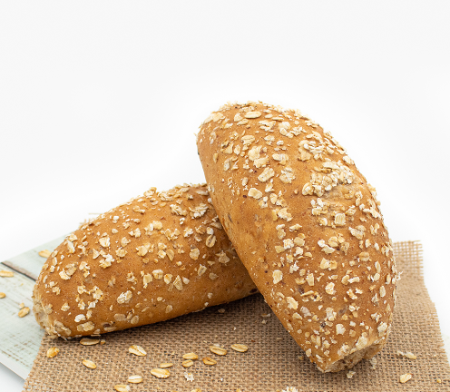
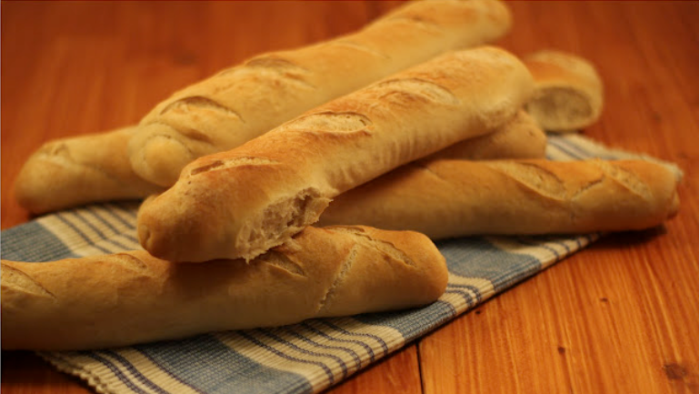
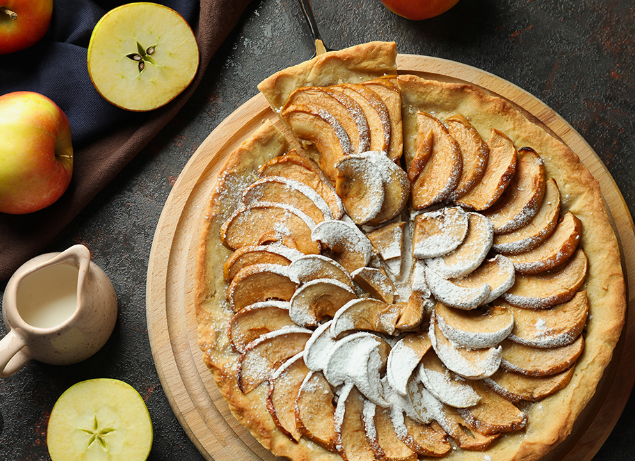
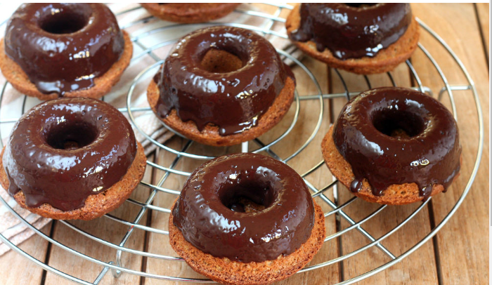
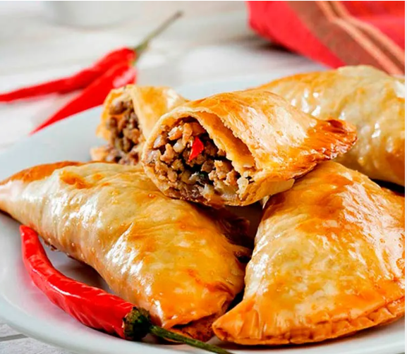
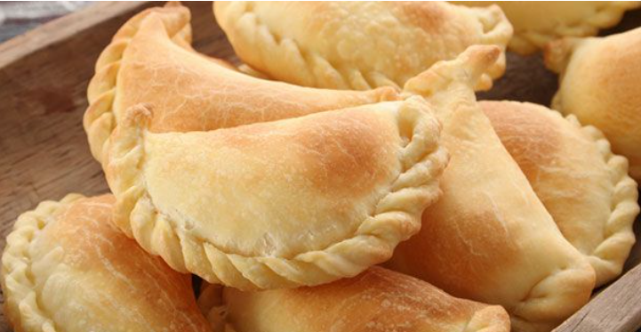

|
Pan de CentenoDescripción: Nuestro pan de centeno es conocido por su sabor auténtico y su corteza crujiente. Perfecto para acompañar tus comidas o hacer deliciosos sándwiches. Ingredientes: Harina de centeno, agua, sal, levadura. |
|  |
Pan IntegralDescripción: Nuestro pan integral es rico en fibra y saludable. Ideal para aquellos que buscan una opción más nutritiva. Ingredientes: Harina integral, agua, sal, levadura. |
|  |
BaguetteDescripción: Nuestra baguette es famosa por su corteza crujiente y su interior suave. Perfecta para acompañar comidas o hacer bocadillos. Ingredientes: Harina de trigo, agua, sal, levadura. |
Seccion de pasteleria-bolleria
|  |
Tarta de ManzanaDescripción: Nuestra tarta de manzana es una deliciosa combinación de manzanas frescas, canela y una base de masa crujiente. Perfecta para un postre o merienda. Ingredientes: Manzanas frescas, canela, azúcar, harina, mantequilla, huevos. |
|  |
Dona de ChocolateDescripción: Nuestras donas de chocolate son esponjosas y cubiertas con un glaseado de chocolate suave. Ideales para satisfacer tu antojo de chocolate. Ingredientes: Harina, cacao en polvo, azúcar, leche, huevos, chocolate para el glaseado. |
Éclair de VainillaDescripción: Nuestros éclairs de vainilla están rellenos de crema de vainilla y cubiertos con una capa de chocolate. Un placer dulce para cualquier momento del día. Ingredientes: Harina, leche, huevos, vainilla, chocolate, crema de vainilla. |
Seccion de empanadas
|  |
Empanadas de CarneDescripción: Nuestras empanadas de carne están rellenas de carne picada sazonada con especias. Una deliciosa opción para un almuerzo rápido. Ingredientes: Carne picada, cebolla, pimiento, especias, masa de empanada. |
Empanadas de PolloDescripción: Nuestras empanadas de pollo son rellenas de jugosa carne de pollo y vegetales, sazonados a la perfección. Ingredientes: Carne de pollo, cebolla, pimiento, aceitunas, masa de empanada. |
|
|  |
Empanadas de QuesoDescripción: Nuestras empanadas de queso son una delicia rellena de queso derretido y una masa crujiente. Perfectas como aperitivo o merienda. Ingredientes: Queso, cebolla, pimiento, masa de empanada. |